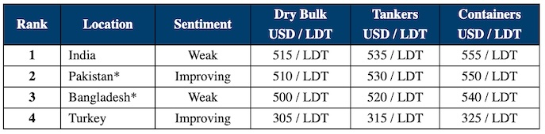

inWeekly Demolition Reports02/12/2023

Markets continue to struggle going into the final weeks of the year, and there has been very little activity or new sales to report as a result,with most end users abstaining from the buying and wishing to wait and watch developments before acquiring afresh.
Indeed, contrary to many expectations, India has lost around 3,000 rupees (USD 35/LDT) from steel prices and there has been completely the opposite of any post Diwali bounce as all buyers turn to caution at the end of another highly volatile year in ship recycling.
Pakistan was buoyed last week by the news that their country will adhere and sign up to the Hong Kong Convention – which will enter into force from 2025, so yards have time to upgrade and improve their facilities in line with HKC standards before then.
The EU will also revisit plans to approve select yards in India and add them to the EU list of approved ship recycling facilities – having previously visited but rejected plans to include them on any list several years ago.
So there is much progress to report and much to look forward to going into 2024, but the thorny issue of available financing and LCs remains of chief concern in both Pakistan and Bangladesh. Constantly fluctuating and depreciating currencies need to settle before banks can start to approve fresh LCs in those locations.
However, there is the general expectation that very few deals or new financing will be seen in Bangladesh until after the elections there in mid January, with the hope that a new government comes in to revitalize a struggling and stagnant economy.
For week 48 of 2023, GMS demo rankings / pricing for the week are as below.

📄 Download PDF: 1%20December,%202023.pdfSource: GMS,Inc. ,https://www.gmsinc.net/gms_new/index.php/web